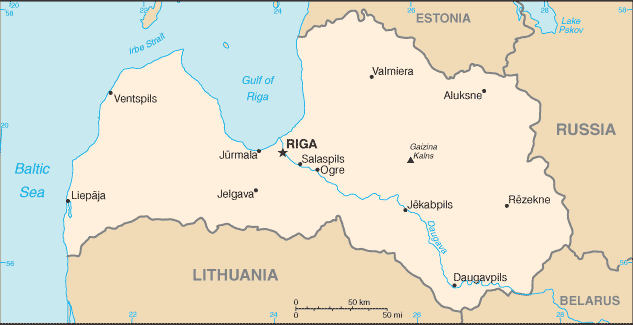
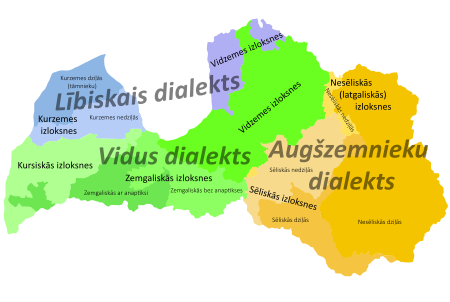
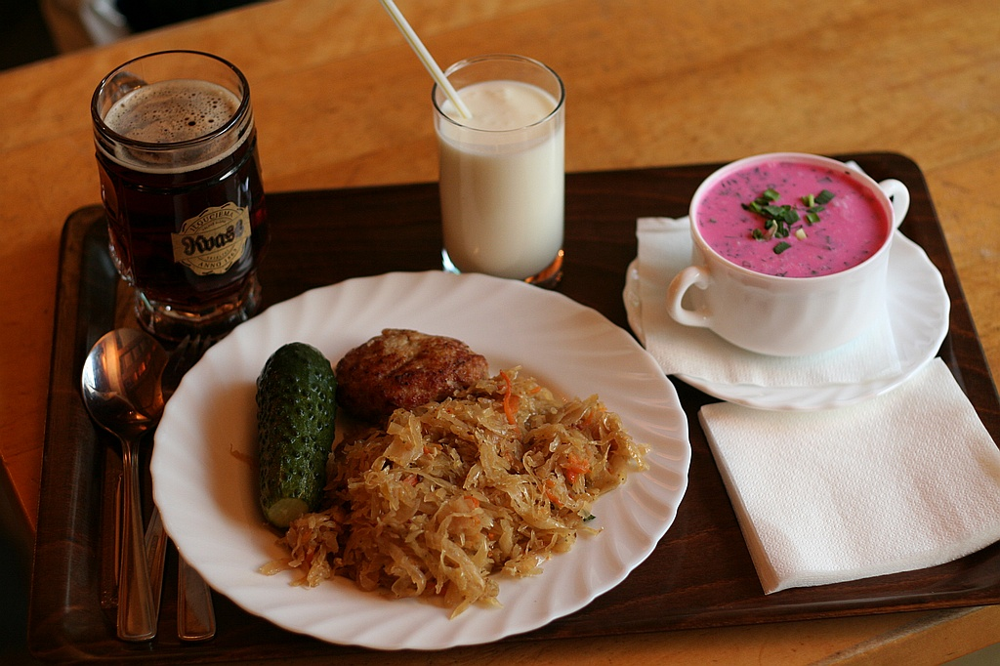

Acerca de Letonia
Letonia es un país báltico, con una población de unos casi 2 millones y medio de habitantes. Hace frontera con Estonia al norte, con Rusia al este, con Bielorrusia al sureste, con Lituania al sur, y tiene una frontera marítima con Suecia al oeste.Las ciudades más importantes son Riga (720.000 habitantes), Daugavpils (198.000) y Liepaja (90.000). Riga, la capital letona, es la ciudad más grande de los países bálticos, así como el principal centro cultural, político, industrial y financiero de estos tres países. Es la cuarta ciudad más grande del Mar Báltico, por detrás de San Petersburgo, Estocolmo y Helsinki. Letonia no sólo es conocida por su bella capital, sino por sus grandes reservas de ámbar, frondosos bosques, herencia hanseática y tener patatas de muy buena calidad. Los letones son mayoritariamente luteranos, como resultado de siglos de colonización alemana, aunque hay una importante minoría ortodoxa (rusos y bielorrusos).
Historia
Los antepasados de los letones, las tribus protobálticas, llegaron a lo actualmente es Letonia en el III milenio A.C.
Los vikingos usaron este territorio como paso para comerciar con Grecia y con Constantinopla (actualmente Estambul), en el Imperio Bizantino.
El ámbar letón siempre fue muy codiciado en el resto de Europa, de hecho hasta la Edad Media el ámbar valía más que el oro, por lo que en la antigua Grecia y el Imperio Romano era símbolo de riqueza y poder.
Los baltos estaban divididos en cuatro tribus: curonios, latgalianos, selonios y semigalianos. La más avanzada socialmente era la de los latgalianos, situados en lo que es ahora el este de Letonia. En el siglo XII los curonios realizaron invasiones de pillaje, siendo conocidos en Suecia y Dinamarca como los vikingos del este. Por el contrario, los selonios y semgalianos eran tribus tranquilas y pacíficas, dedicadas a la ganadería.
El actual territorio de Letonia y Estonia fue conocido como Livonia en Europa Occidental.
Debido a su situación geográfica, Letonia siempre ha sido codiciada e invadida por naciones más poderosas, lo que explica la gran mezcla de influencias culturales que tiene este país. En 1109, el territorio letón fue visitado por comerciantes alemanes, quienes trajeron misioneros que predicaron el cristianismo con el deseo de convertir a los paganos baltos.
Pero los baltos no querían cambiar de religión, se mantenían fieles a sus creencias, por lo que el Papa Celestino III decidió emprender las Cruzadas Bálticas para cristianizar por la fuerza a estas gentes.
Albert von Buxhoeveden, un obispo oriundo de Bremen, fundó Riga en 1201, que con el paso del tiempo se convirtió en una de las ciudades más importantes del Báltico, integrada en la Liga Hanseática.  Y así comenzó la hegemonía alemana en Letonia, que no se detuvo hasta siete siglos después, en 1918. En 1282 fueron incluidas en la liga hanseática Wenden (actualmente Cēsis), Lemsal (Limbaži), Kokenhausen (Koknese) y Wolmar (Valmiera). Desde entonces, Letonia y sobre todo Riga, se convirtió en un nexo de unión entre el oeste y el este de Europa, uniendo Rusia con Europa occidental.
Y así comenzó la hegemonía alemana en Letonia, que no se detuvo hasta siete siglos después, en 1918. En 1282 fueron incluidas en la liga hanseática Wenden (actualmente Cēsis), Lemsal (Limbaži), Kokenhausen (Koknese) y Wolmar (Valmiera). Desde entonces, Letonia y sobre todo Riga, se convirtió en un nexo de unión entre el oeste y el este de Europa, uniendo Rusia con Europa occidental.
En el siglo XVI los letones rompieron con Roma y aceptaron el luteranismo como fe en Kurzeme, Zemgale y Vidzeme, pero en Latgale se mantuvieron fieles al catolicismo. Tras la Guerra de Livonia (1558-1583), la mayor parte de este territorio pasó a manos polacas, excepto el norte, los alrededores de Reval (actualmente Tallinn), que se integró en el Imperio Sueco.
En el siglo XVII, el Ducado de Curlandia (fue polaco hasta 1795) tuvo una colonia en el Caribe, llamada Fort Jakob, siendo el estado europeo más pequeño en tener una colonia de ultramar. En el siglo XVIII fue traspasada a Inglaterra y recibió el nombre de James Island.
En 1621 Riga y la mitad nororiental de Letonia fueron conquistadas por Suecia, convirtiéndose la capital letona en la ciudad más grande de Suecia, incluso más que Estocolmo. De este periodo data la puerta Sueca del casco histórico de Riga (conocido como Zviedru Vārtis en letón y Svenskporten en sueco), usada para los soldados del Imperio Sueco. Durante las décadas de dominio sueco Letonia fue conocida como el granero de Suecia, ya que suplía al Imperio de su trigo.
En la Gran Guerra del Norte (1700-1721), que enfrentó a Suecia con Rusia, Dinamarca, Prusia y Polonia, los rusos derrotaron a los suecos, por lo que toda Livonia pasó a formar parte del Imperio Ruso. A pesar de ello, los rusos siempre respetaron la fe luterana de los alemanes y letones asentados allí, nunca impusieron el idioma ruso (quedando sólo relegado al plano militar y administrativo) y devolvieron a la población los privilegios hanseáticos de comercio que fueron suprimidos por los suecos.
El resto de Letonia permaneció siendo polaca hasta las Particiones de Polonia en 1793, tras las cuales Curlandia pasó a manos rusas. A lo largo del siglo XIX Letonia con Riga a la cabeza se desarrollaron cada vez más, convirtiéndose en la cuarta ciudad más importante de Rusia tras San Petersburgo, Moscú y Varsovia. El ferrocarril llegó en 1862, así como el alumbrado público y el automóvil. También tuvo lugar el despertar nacionalista letón: hasta este siglo los letones vivían en el campo o a las afueras de las ciudades, estando en estas los alemanes y los rusos, quienes tenían muchos más privilegios. La señalización de las calles y plazas estaba en ruso y en alemán, el letón apareció como tercer idioma a partir de la década de 1880. Como respuesta a estas aspiraciones nacionalistas, el zar Nicolás II decretó que el ruso sería el único idioma oficial en las provincias del báltico (esto sucedió también en Lituania y Estonia), así como en Polonia y Finlandia. Esta decisión sólo tuvo como consecuencia avivar las ganas de libertad de estas naciones.
Al igual que Lituania, Letonia fue ocupada entre 1915 y 1918 por Alemania, y tras ese periodo de ocupación y aprovechando el caos generado por la Revolución Rusa, la nación báltica proclamó la independencia en 1918. Fue invadida por los bolcheviques, pero los letones los repelieron exitosamente con ayuda de los alemanes.
Durante los años 20 y 30 Letonia tomó como modelo de referencia a Suecia, imitando su sistema educativo, modelo económico y social, lo cual cosechó bastantes éxitos.
En 1940, como consecuencia del pacto secreto Molotov-Ribbentrop, Letonia fue invadida por la URSS. Miles de letones fueron deportados a Siberia, y los que consiguieron huir se exiliaron en Suecia, Estados Unidos y Canadá. En 1941 Hitler invadió la URSS, y por ende también Letonia. Los letones recibieron a los nazis como héroes libertadores, pero lo cierto es que realizaron innumerables masacres contra la población judía y homosexual, como sucedió en Kaiserwald (al norte de Riga) o en Rumbula.
En 1944 el Ejército Rojo volvió a anexionarse Letonia, que permaneció en la URSS hasta 1991. En los años posteriores a la guerra, Letonia recibió oleadas de inmigrantes rusos, ucranianos y bielorrusos, cambiando drásticamente la composición étnica del país. La mayoría no aprendieron letón, por lo que el ruso se convirtió en la segunda lengua oficial del país. Durante la época soviética Letonia fue muy industrializada y urbanizada, claro ejemplo de ello es la factoría RVR (Rīgas Vagonbūves Rūpnīca), que se convirtió en el mayor constructor de locomotoras, unidades diesel y eléctricas de toda la Unión.
Tras los eventos de la Cadena Báltica, Letonia recobró la independencia en 1991. Muchos eslavos se marcharon a Rusia o Ucrania, y los que se quedaron no obtuvieron la nacionalidad letona. A día de hoy los hijos de los rusos o ucranianos étnicos habitualmente saben hablar letón, pues es el idioma de la enseñanza. Tras la conversión a la democracia y la economía de mercado, Letonia ingresió en la Unión Europea en 2004 y adoptó el euro como moneda oficial en 2014, sustituyendo al lats.
Idiomas
El único idioma oficial en Letonia es el letón, una lengua de la rama báltica, cuyo único pariente vivo es el lituano. Lo habla el 70% de la población, y lo entiende casi el 90%. Como consecuencia de haber pertenecido a la URSS, el ruso es la segunda lengua más extendida, el 26% de la población lo habla. El resto de lenguas habladas son el ucraniano, el bielorruso, el polaco, el lituano y el estonio. Hasta 2013 existía un idioma regional de origen urálico, el livonio. La última hablante de esta lengua era Grizelda Kristiņa, quien murió ese año, dándose por extinta la lengua a partir de ese momento.
La mayoría de los jóvenes entiende perfectamente el inglés, mientras que las personas mayores tienen más bien conocimientos de ruso y alemán. A continuación unas palabras y frases básicas en letón:

Hola-Sveiki /svéiki/
Adiós-Ardievas /árdievas/
Gracias-Paldies /páldies/
Por favor-Lūdzu /luudsu/
¿Qué tal?-Kā tev iet? /kaa tef iét/
Bien, mal-Labi, Slikti /lábi, slíkti/
¿Hablas inglés/español/letón?-Vai tu runā angliski/spāniski/latviski /vái tu runaa ángliski-spaaniski-látviski/
¿Dónde está...?-Kur ir...? /kur ir/
Estación de tren-Dzelzceļa Stacija /dséltsela státsia/
Aeropuerto-Lidosta /lídosta/
Autobús-Autobuss /áutobuss/
Troleibús-Trolejbuss /tróleibuss/
Tranvía-Tramvajs /trámvais/
Coche-Auto /áuto/
Cultura
La cultura de Letonia combina elementos bálticos con escandinavos, alemanes y rusos, generando un resultado bastante llamativo e interesante.
La arquitectura tradicional de este país se basa en las casas de madera, de forma muy similar a Escandinavia o al norte de Rusia. Con el comienzo de la influencia alemana a partir del siglo XIII llegó el gótico del Báltico, y más tarde el estilo renacentista holandés y flamenco que se puede apreciar en buena parte del casco histórico de Riga. Así mismo, la capital letona es el mejor lugar del mundo para observar arquitectura modernista en su corriente alemana, el Jugendstil.

En cuanto a literatura, históricamente en Letonia se escribió en alemán, sueco, polaco o ruso, teniendo el letón sólo un papel importante a partir de la segunda mitad del siglo XIX. Dos de los escritores más importantes que tuvo Letonia fueron Jaņis Rainis (1865-1929) y Zenta Mauriņa, quien escribió su obra en los tres idiomas históricos del país: letón, alemán y ruso.
Letonia comparte con Lituania la costumbre báltica de la canción, denominada aquí Dainas. Es prácticamente idéntica a las de sus hermanos lituanos, pero obviamente cantando sobre la historia de Letonia.
Gastronomía
Al haber pertenecido a tantos países, cada una de esas naciones ha dejado su huella en la gastronomía letona. En general la cocina de este país es bastante similar a la alemana, ya que también se consume chucrut, pepinillos, patatas y salchichas. Pero también se parece a la rusa y polaca, ya que el uso de pelmeni y sopas frías es muy popular. El queso Jāņi es de muy buena calidad, muy famoso en toda Letonia, tanto es así que es un símbolo nacional. En cuanto a bebidas el bálsamo negro de Riga es muy consumido, así como el vodka. Y por último cabe destacar que Letonia tiene la mejor marca de chocolates del báltico, la gran Laima.